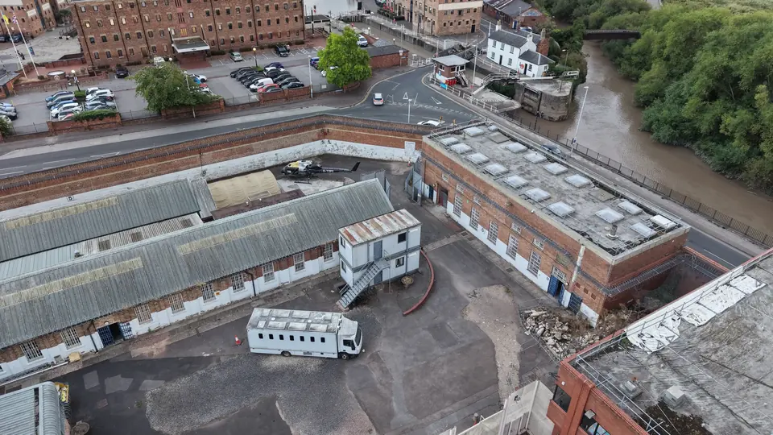

People
Portraits, moments and genuine experiences captured naturally.
PEOPLE. PLACES. LANDSCAPES. ADVENTURES.
Photography is the still side of the NEWITT Media story, capturing the people, places, landscapes and experiences that make every adventure worth remembering.
A study of architecture and place, photographed by NEWITT Skyline Media.



Photography is being developed into a dedicated collection of images from the people, places and adventures behind NEWITT Media.
The wider photography portfolio is being developed.
Every image is part of a wider story. From people and places to landscapes and adventures, photography gives NEWITT Media another way to capture the moment.
Portraits, moments and genuine experiences captured naturally.
Locations, architecture and environments with their own stories to tell.
Landscapes, journeys and experiences captured as part of the NEWITT story.
Explore the aerial world of NEWITT Skyline Media or head into the darkness with NEWITT's Paranormal Adventures.